MA1508 Calculus · Chapter 6 · Lesson 1
Area and slices
Build a total by adding thin pieces: first area, then volume.
Stewart, Single Variable Calculus: Concepts and Contexts, 4th ed.: §6.1, p. 432; §6.2, p. 438.
1. Choose a strip
The shaded region lies between \(y=2x-x^2\) and \(y=x^2\). Change direction and number of strips; move or play the highlighted slice. What are its two endpoints?
Find intersections first. On each interval, subtract upper − lower or right − left; each strip length must be nonnegative.
Find the area enclosed by the parabolas \(y=x^2\) and \(y=2x-x^2\).
Show answerHide answer
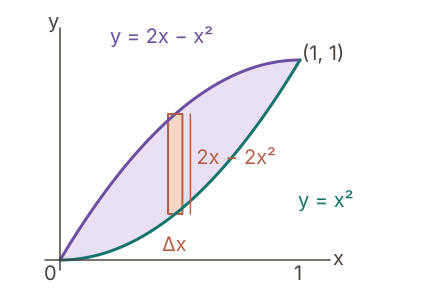
- Intersect: \(x^2=2x-x^2\), so \(2x(x-1)=0\). The points are \((0,0)\) and \((1,1)\).
- On \([0,1]\), the upper curve is \(2x-x^2\) and the lower curve is \(x^2\). A strip has height \(2x-2x^2\).
- \(A=\int_0^1(2x-2x^2)\,dx=[x^2-\tfrac23x^3]_0^1=\tfrac13\).
Find the area enclosed by the line \(y=x-1\) and the parabola \(y^2=2x+6\).
Show answerHide answer
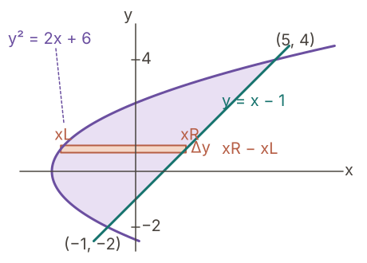
- Write \(x=y+1\) on the line and \(x=\tfrac12y^2-3\) on the parabola. Intersections satisfy \(y^2=2y+8\), giving \(y=-2,4\) and points \((-1,-2),(5,4)\).
- For \(-2\le y\le4\), \(x_{\rm left}=\tfrac12y^2-3\), \(x_{\rm right}=y+1\), so the strip length is \(-\tfrac12y^2+y+4\).
- \(A=\int_{-2}^4(-\tfrac12y^2+y+4)\,dy=[-\tfrac16y^3+\tfrac12y^2+4y]_{-2}^4=18\).
Vertical strips in Example 5 require a split at \(x=-1\). Horizontal strips use one integral.
Find the area under one arch of the cycloid \(x=r(\theta-\sin\theta)\), \(y=r(1-\cos\theta)\), where \(r>0\).
Show answerHide answer
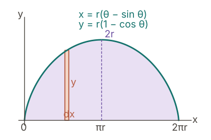
- As \(\theta\) goes from \(0\) to \(2\pi\), the arch is traced once from left to right, and \(dx=r(1-\cos\theta)\,d\theta\).
- \(A=\int y\,dx=r^2\int_0^{2\pi}(1-\cos\theta)^2\,d\theta\).
- Since \(\cos^2\theta=\tfrac12(1+\cos2\theta)\), the integrand is \(\tfrac32-2\cos\theta+\tfrac12\cos2\theta\).
- \(A=r^2[\tfrac32\theta-2\sin\theta+\tfrac14\sin2\theta]_0^{2\pi}=3\pi r^2\).
For a nonnegative parametric graph traced once from left to right, \(A=\int y\,dx=\int y(t)x'(t)\,dt\). Check the direction of traversal.
2. From familiar solids to slices
A right cylinder has congruent parallel bases. Its volume is base area times perpendicular height.
Stewart §6.2, Figure 1, redrawn.
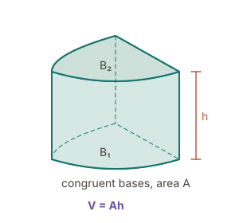
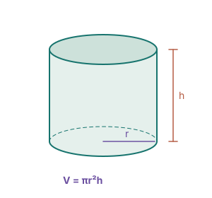
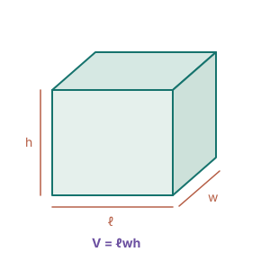
Cut a solid with a plane
The intersection is a cross-section. Move the cutting plane: the area can stay constant or change.
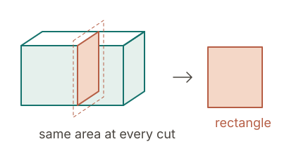
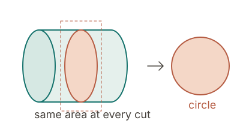
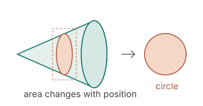
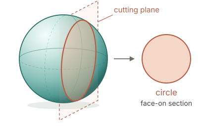
Watch the cross-sections change
Each cross-section perpendicular to the x-axis is a square with side \(1-x\). Move the slice and increase the number of pieces.
Definition of volume
More generally, identify the shape and find its area \(A(x)\) before summing. If \(A\) is continuous, the limit exists; the cross-section need not be circular. Divide \([a,b]\) into \(n\) equal pieces, with \(\Delta x=(b-a)/n\), and choose a point \(x_i^*\) in each.
Rotate the region under \(y=\sqrt{x}\), above the x-axis, from \(x=0\) to \(x=1\), about the x-axis. Find the volume and show a typical approximating cylinder.
Show answerHide answer
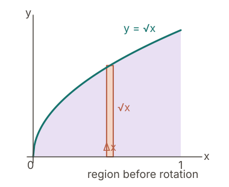
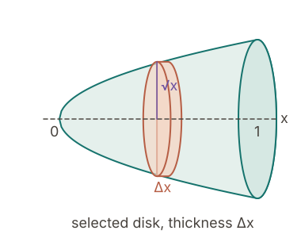
- At \(x\in[0,1]\), the disk radius is \(R(x)=\sqrt{x}\), so its area is \(A(x)=\pi(\sqrt{x})^2=\pi x\).
- A thin approximating cylinder has volume \(A(x)\Delta x=\pi x\Delta x\). Summing the disks gives \(V=\int_0^1\pi x\,dx=\pi[\tfrac12x^2]_0^1=\tfrac\pi2\).